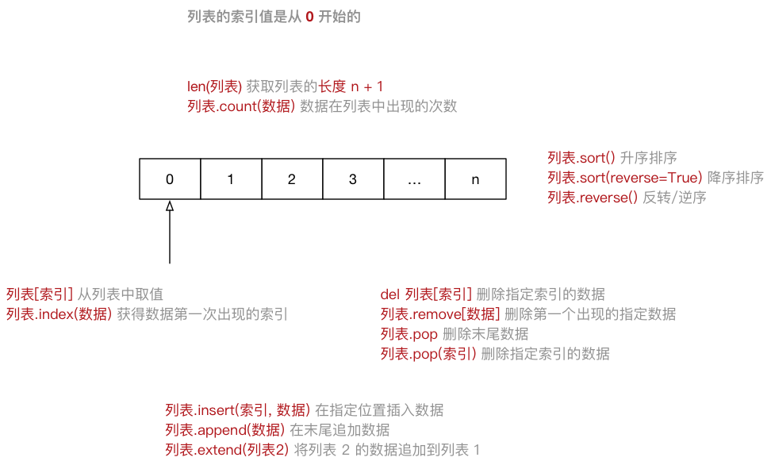
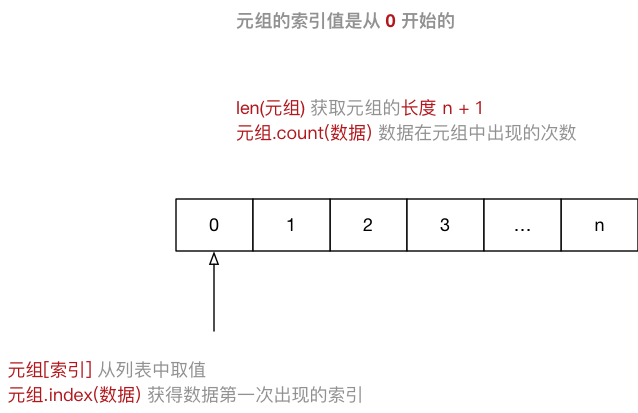

高级变量类型
目标
- 列表
- 元组
- 字典
- 字符串
- 公共方法
- 变量高级
知识点回顾
- Python 中数据类型可以分为 数字型 和 非数字型
- 数字型
- 整型 (
int) - 浮点型（
float） - 布尔型（
bool）- 真
True非 0 数—— 非零即真 - 假
False0
- 真
- 复数型 (
complex)- 主要用于科学计算，例如：平面场问题、波动问题、电感电容等问题
- 整型 (
- 非数字型
- 字符串
- 列表
- 元组
- 字典
- 在
Python中，所有 非数字型变量 都支持以下特点：- 都是一个 序列
sequence，也可以理解为 容器 - 取值
[] - 遍历
for in - 计算长度、最大/最小值、比较、删除
- 链接
+和 重复* - 切片
- 都是一个 序列
01. 列表
1.1 列表的定义
List（列表） 是Python中使用 最频繁 的数据类型，在其他语言中通常叫做 数组- 专门用于存储 一串 信息
- 列表用
[]定义，数据 之间使用,分隔 - 列表的 索引 从
0开始- 索引 就是数据在 列表 中的位置编号，索引 又可以被称为 下标
注意：从列表中取值时，如果 超出索引范围，程序会报错
1 | name_list = ["zhangsan", "lisi", "wangwu"] |

1.2 列表常用操作
- 在
ipython3中定义一个 列表，例如：name_list = [] - 输入
name_list.按下TAB键，ipython会提示 列表 能够使用的 方法 如下：
1 | In [1]: name_list. |
| 序号 | 分类 | 关键字 / 函数 / 方法 | 说明 |
|---|---|---|---|
| 1 | 增加 | 列表.insert(索引, 数据) | 在指定位置插入数据 |
| 列表.append(数据) | 在末尾追加数据 | ||
| 列表.extend(列表2) | 将列表2 的数据追加到列表 | ||
| 2 | 修改 | 列表[索引] = 数据 | 修改指定索引的数据 |
| 3 | 删除 | del 列表[索引] | 删除指定索引的数据 |
| 列表.remove[数据] | 删除第一个出现的指定数据 | ||
| 列表.pop | 删除末尾数据 | ||
| 列表.pop(索引) | 删除指定索引数据 | ||
| 列表.clear | 清空列表 | ||
| 4 | 统计 | len(列表) | 列表长度 |
| 列表.count(数据) | 数据在列表中出现的次数 | ||
| 5 | 排序 | 列表.sort() | 升序排序 |
| 列表.sort(reverse=True) | 降序排序 | ||
| 列表.reverse() | 逆序、反转 |
del 关键字（科普）
- 使用
del关键字(delete) 同样可以删除列表中元素 del关键字本质上是用来 将一个变量从内存中删除的- 如果使用
del关键字将变量从内存中删除，后续的代码就不能再使用这个变量了
1 | del name_list[1] |
在日常开发中，要从列表删除数据，建议 使用列表提供的方法
关键字、函数和方法（科普）
- 关键字 是 Python 内置的、具有特殊意义的标识符
1 | In [1]: import keyword |
关键字后面不需要使用括号
- 函数 封装了独立功能，可以直接调用
1 | 函数名(参数) |
函数需要死记硬背
- 方法 和函数类似，同样是封装了独立的功能
- 方法 需要通过 对象 来调用，表示针对这个 对象 要做的操作
1 | 对象.方法名(参数) |
在变量后面输入
.，然后选择针对这个变量要执行的操作，记忆起来比函数要简单很多
1.3 循环遍历
- 遍历 就是 从头到尾 依次 从 列表 中获取数据
- 在 循环体内部 针对 每一个元素，执行相同的操作
- 在
Python中为了提高列表的遍历效率，专门提供的 迭代 iteration 遍历 - 使用
for就能够实现迭代遍历
1 | # for 循环内部使用的变量 in 列表 |

1.4 应用场景
- 尽管
Python的 列表 中可以 存储不同类型的数据 - 但是在开发中，更多的应用场景是
- 列表 存储相同类型的数据
- 通过 迭代遍历，在循环体内部，针对列表中的每一项元素，执行相同的操作
02. 元组
2.1 元组的定义
Tuple（元组）与列表类似，不同之处在于元组的 元素不能修改- 元组 表示多个元素组成的序列
- 元组 在
Python开发中，有特定的应用场景
- 用于存储 一串 信息，数据 之间使用
,分隔 - 元组用
()定义 - 元组的 索引 从
0开始- 索引 就是数据在 元组 中的位置编号
1 | info_tuple = ("zhangsan", 18, 1.75) |
创建空元组
1 | info_tuple = () |
元组中 只包含一个元素 时，需要 在元素后面添加逗号
1 | info_tuple = (50, ) |

2.2 元组常用操作
- 在
ipython3中定义一个 元组，例如：info = () - 输入
info.按下TAB键，ipython会提示 元组 能够使用的函数如下：
1 | info.count info.index |
有关 元组 的 常用操作 可以参照上图练习
2.3 循环遍历
- 取值 就是从 元组 中获取存储在指定位置的数据
- 遍历 就是 从头到尾 依次 从 元组 中获取数据
1 | # for 循环内部使用的变量 in 元组 |
- 在
Python中，可以使用for循环遍历所有非数字型类型的变量：列表、元组、字典 以及 字符串- 提示：在实际开发中，除非 能够确认元组中的数据类型，否则针对元组的循环遍历需求并不是很多
2.4 应用场景
- 尽管可以使用
for in遍历 元组 - 但是在开发中，更多的应用场景是：
- 函数的 参数 和 返回值，一个函数可以接收 任意多个参数，或者 一次返回多个数据
- 有关 函数的参数 和 返回值，在后续 函数高级 给大家介绍
- 格式字符串，格式化字符串后面的
()本质上就是一个元组 - 让列表不可以被修改，以保护数据安全
- 函数的 参数 和 返回值，一个函数可以接收 任意多个参数，或者 一次返回多个数据
1 | info = ("zhangsan", 18) |
元组和列表之间的转换
- 使用
list函数可以把元组转换成列表
1 | list(元组) |
- 使用
tuple函数可以把列表转换成元组
1 | tuple(列表) |
03. 字典
3.1 字典的定义
dictionary（字典） 是 除列表以外Python之中 最灵活 的数据类型- 字典同样可以用来 存储多个数据
- 通常用于存储 描述一个
物体的相关信息
- 通常用于存储 描述一个
- 和列表的区别
- 列表 是 有序 的对象集合
- 字典 是 无序 的对象集合
- 字典用
{}定义 - 字典使用 键值对 存储数据，键值对之间使用
,分隔- 键
key是索引 - 值
value是数据 - 键 和 值 之间使用
:分隔 - 键必须是唯一的
- 值 可以取任何数据类型，但 键 只能使用 字符串、数字或 元组
- 键
1 | xiaoming = {"name": "小明", |

3.2 字典常用操作
- 在
ipython3中定义一个 字典，例如：xiaoming = {} - 输入
xiaoming.按下TAB键，ipython会提示 字典 能够使用的函数如下：
1 | In [1]: xiaoming. |
有关 字典 的 常用操作 可以参照上图练习
3.3 循环遍历
- 遍历 就是 依次 从 字典 中获取所有键值对
1 | # for 循环内部使用的 `key 的变量` in 字典 |
提示：在实际开发中，由于字典中每一个键值对保存数据的类型是不同的，所以针对字典的循环遍历需求并不是很多
3.4 应用场景
- 尽管可以使用
for in遍历 字典 - 但是在开发中，更多的应用场景是：
- 使用 多个键值对，存储 描述一个
物体的相关信息 —— 描述更复杂的数据信息 - 将 多个字典 放在 一个列表 中，再进行遍历，在循环体内部针对每一个字典进行 相同的处理
- 使用 多个键值对，存储 描述一个
1 | card_list = [{"name": "张三", |
04. 字符串
4.1 字符串的定义
- 字符串 就是 一串字符，是编程语言中表示文本的数据类型
- 在 Python 中可以使用 一对双引号
"或者 一对单引号'定义一个字符串- 虽然可以使用
\"或者\'做字符串的转义，但是在实际开发中：- 如果字符串内部需要使用
"，可以使用'定义字符串 - 如果字符串内部需要使用
'，可以使用"定义字符串
- 如果字符串内部需要使用
- 虽然可以使用
- 可以使用 索引 获取一个字符串中 指定位置的字符，索引计数从 0 开始
- 也可以使用
for循环遍历 字符串中每一个字符
大多数编程语言都是用
"来定义字符串
1 | string = "Hello Python" |

4.2 字符串的常用操作
- 在
ipython3中定义一个 字符串，例如：hello_str = "" - 输入
hello_str.按下TAB键，ipython会提示 字符串 能够使用的 方法 如下：
1 | In [1]: hello_str. |
提示：正是因为 python 内置提供的方法足够多，才使得在开发时，能够针对字符串进行更加灵活的操作！应对更多的开发需求！
1) 判断类型 - 9
| 方法 | 说明 |
|---|---|
| string.isspace() | 如果 string 中只包含空格，则返回 True |
| string.isalnum() | 如果 string 至少有一个字符并且所有字符都是字母或数字则返回 True |
| string.isalpha() | 如果 string 至少有一个字符并且所有字符都是字母则返回 True |
| string.isdecimal() | 如果 string 只包含数字则返回 True，全角数字 |
| string.isdigit() | 如果 string 只包含数字则返回 True，全角数字、⑴、\u00b2 |
| string.isnumeric() | 如果 string 只包含数字则返回 True，全角数字，汉字数字 |
| string.istitle() | 如果 string 是标题化的(每个单词的首字母大写)则返回 True |
| string.islower() | 如果 string 中包含至少一个区分大小写的字符，并且所有这些(区分大小写的)字符都是小写，则返回 True |
| string.isupper() | 如果 string 中包含至少一个区分大小写的字符，并且所有这些(区分大小写的)字符都是大写，则返回 True |
2) 查找和替换 - 7
| 方法 | 说明 |
|---|---|
| string.startswith(str) | 检查字符串是否是以 str 开头，是则返回 True |
| string.endswith(str) | 检查字符串是否是以 str 结束，是则返回 True |
| string.find(str, start=0, end=len(string)) | 检测 str 是否包含在 string 中，如果 start 和 end 指定范围，则检查是否包含在指定范围内，如果是返回开始的索引值，否则返回 -1 |
| string.rfind(str, start=0, end=len(string)) | 类似于 find()，不过是从右边开始查找 |
| string.index(str, start=0, end=len(string)) | 跟 find() 方法类似，不过如果 str 不在 string 会报错 |
| string.rindex(str, start=0, end=len(string)) | 类似于 index()，不过是从右边开始 |
| string.replace(old_str, new_str, num=string.count(old)) | 把 string 中的 old_str 替换成 new_str，如果 num 指定，则替换不超过 num 次 |
3) 大小写转换 - 5
| 方法 | 说明 |
|---|---|
| string.capitalize() | 把字符串的第一个字符大写 |
| string.title() | 把字符串的每个单词首字母大写 |
| string.lower() | 转换 string 中所有大写字符为小写 |
| string.upper() | 转换 string 中的小写字母为大写 |
| string.swapcase() | 翻转 string 中的大小写 |
4) 文本对齐 - 3
| 方法 | 说明 |
|---|---|
| string.ljust(width) | 返回一个原字符串左对齐，并使用空格填充至长度 width 的新字符串 |
| string.rjust(width) | 返回一个原字符串右对齐，并使用空格填充至长度 width 的新字符串 |
| string.center(width) | 返回一个原字符串居中，并使用空格填充至长度 width 的新字符串 |
5) 去除空白字符 - 3
| 方法 | 说明 |
|---|---|
| string.lstrip() | 截掉 string 左边（开始）的空白字符 |
| string.rstrip() | 截掉 string 右边（末尾）的空白字符 |
| string.strip() | 截掉 string 左右两边的空白字符 |
6) 拆分和连接 - 5
| 方法 | 说明 |
|---|---|
| string.partition(str) | 把字符串 string 分成一个 3 元素的元组 (str前面, str, str后面) |
| string.rpartition(str) | 类似于 partition() 方法，不过是从右边开始查找 |
| string.split(str=””, num) | 以 str 为分隔符拆分 string，如果 num 有指定值，则仅分隔 num + 1 个子字符串，str 默认包含 ‘\r’, ‘\t’, ‘\n’ 和空格 |
| string.splitlines() | 按照行(‘\r’, ‘\n’, ‘\r\n’)分隔，返回一个包含各行作为元素的列表 |
| string.join(seq) | 以 string 作为分隔符，将 seq 中所有的元素（的字符串表示）合并为一个新的字符串 |
4.3 字符串的切片
- 切片 方法适用于 字符串、列表、元组
- 切片 使用 索引值 来限定范围，从一个大的 字符串 中 切出 小的 字符串
- 列表 和 元组 都是 有序 的集合，都能够 通过索引值 获取到对应的数据
- 字典 是一个 无序 的集合，是使用 键值对 保存数据

1 | 字符串[开始索引:结束索引:步长] |
注意：
- 指定的区间属于 左闭右开 型
[开始索引, 结束索引)=>开始索引 >= 范围 < 结束索引- 从
起始位开始，到结束位的前一位 结束（不包含结束位本身)
- 从
- 从头开始，开始索引 数字可以省略，冒号不能省略
- 到末尾结束，结束索引 数字可以省略，冒号不能省略
- 步长默认为
1，如果连续切片，数字和冒号都可以省略
索引的顺序和倒序
- 在 Python 中不仅支持 顺序索引，同时还支持 倒序索引
- 所谓倒序索引就是 从右向左 计算索引
- 最右边的索引值是 -1，依次递减
演练需求
- 截取从 2 ~ 5 位置 的字符串
- 截取从 2 ~
末尾的字符串
- 截取从 2 ~
- 截取从
开始~ 5 位置 的字符串
- 截取从
- 截取完整的字符串
- 从开始位置，每隔一个字符截取字符串
- 从索引 1 开始，每隔一个取一个
- 截取从 2 ~
末尾 - 1的字符串
- 截取从 2 ~
- 截取字符串末尾两个字符
- 字符串的逆序（面试题）
答案
1 | num_str = "0123456789" |
05. 公共方法
5.1 Python 内置函数
Python 包含了以下内置函数：
| 函数 | 描述 | 备注 |
|---|---|---|
| len(item) | 计算容器中元素个数 | |
| del(item) | 删除变量 | del 有两种方式 |
| max(item) | 返回容器中元素最大值 | 如果是字典，只针对 key 比较 |
| min(item) | 返回容器中元素最小值 | 如果是字典，只针对 key 比较 |
| cmp(item1, item2) | 比较两个值，-1 小于/0 相等/1 大于 | Python 3.x 取消了 cmp 函数 |
注意
- 字符串 比较符合以下规则： “0” < “A” < “a”
5.2 切片
| 描述 | Python 表达式 | 结果 | 支持的数据类型 |
|---|---|---|---|
| 切片 | “0123456789”[::-2] | “97531” | 字符串、列表、元组 |
- 切片 使用 索引值 来限定范围，从一个大的 字符串 中 切出 小的 字符串
- 列表 和 元组 都是 有序 的集合，都能够 通过索引值 获取到对应的数据
- 字典 是一个 无序 的集合，是使用 键值对 保存数据
5.3 运算符
| 运算符 | Python 表达式 | 结果 | 描述 | 支持的数据类型 |
|---|---|---|---|---|
| + | [1, 2] + [3, 4] | [1, 2, 3, 4] | 合并 | 字符串、列表、元组 |
| * | [“Hi!”] * 4 | [‘Hi!’, ‘Hi!’, ‘Hi!’, ‘Hi!’] | 重复 | 字符串、列表、元组 |
| in | 3 in (1, 2, 3) | True | 元素是否存在 | 字符串、列表、元组、字典 |
| not in | 4 not in (1, 2, 3) | True | 元素是否不存在 | 字符串、列表、元组、字典 |
| > >= == < <= | (1, 2, 3) < (2, 2, 3) | True | 元素比较 | 字符串、列表、元组 |
注意
in在对 字典 操作时，判断的是 字典的键in和not in被称为 成员运算符
成员运算符
成员运算符用于 测试 序列中是否包含指定的 成员
| 运算符 | 描述 | 实例 |
|---|---|---|
| in | 如果在指定的序列中找到值返回 True，否则返回 False | 3 in (1, 2, 3) 返回 True |
| not in | 如果在指定的序列中没有找到值返回 True，否则返回 False | 3 not in (1, 2, 3) 返回 False |
注意：在对 字典 操作时，判断的是 字典的键
5.4 完整的 for 循环语法
- 在
Python中完整的for 循环的语法如下：
1 | for 变量 in 集合: |
应用场景
- 在 迭代遍历 嵌套的数据类型时，例如 一个列表包含了多个字典
- 需求：要判断 某一个字典中 是否存在 指定的 值
- 如果 存在，提示并且退出循环
- 如果 不存在，在 循环整体结束 后，希望 得到一个统一的提示
1 | students = [ |